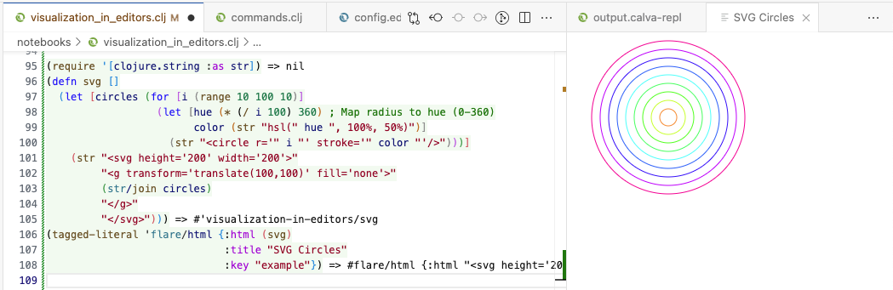

Flares#
Flares are special values that request Calva behavior like showing HTML in a WebView panel. Flares are used by tools like Clay to show data visualizations. You can make Custom REPL Commands that produce flares. Calva inspects all REPL evaluation for flares, so you can use them in the REPL too. Flares can be used with any type of REPL, including: Clojure, ClojureScript, Babashka, Joyride.
Try Flares in the REPL#
Try this example by copying it to your Calva REPL:
(tagged-literal 'flare/html {:html "<h1>Hello, Flares!</h1>",
:title "Greeting"
:key "example"})
A WebView panel opens up showing the rendered HTML content.
Flares are tagged literals consisting of a tag indicating the desired action, and a map containing the request details.
The tagged-literal function is a clojure.core function that creates the special value.
Clojure prints tagged literals as #tag{...}, so when you create the flare, it will be printed as #flare/html{...}.
- Tag:
flare/html– Indicates a WebView request - Request:
{:html "..."}- HTML content to display
To show a webpage, pass a :url instead of :html in the request:
(tagged-literal 'flare/html {:url "https://calva.io/",
:title "Calva homepage"
:key "example"})
The :key parameter is optional and can be used to reuse the same WebView panel.
If omitted, a new WebView panel will be created per request.
Sidebar vs Panel Display#
By default, flares open in a separate WebView panel alongside your code.
You can also display flares in the Calva sidebar using the :sidebar-panel? option:
;; Display in a separate panel (default)
(tagged-literal 'flare/html {:html "<h1>Hello, Panel!</h1>",
:title "Panel Display"})
;; Display in the Calva sidebar
(tagged-literal 'flare/html {:html "<h1>Hello, Sidebar!</h1>",
:title "Sidebar Display"
:sidebar-panel? true})
The sidebar Flare view is located in the Calva activity bar section.
Try a more interesting example#
Let's create an SVG containing circles of varying radii and colors:
(require '[clojure.string :as str])
(defn svg []
(let [circles (for [i (range 10 100 10)]
(let [hue (* (/ i 100) 360) ; Map radius to hue (0-360)
color (str "hsl(" hue ", 100%, 50%)")]
(str "<circle r='" i "' stroke='" color "'/>")))]
(str "<svg height='200' width='200'>"
"<g transform='translate(100,100)' fill='none'>"
(str/join circles)
"</g>"
"</svg>")))
(tagged-literal 'flare/html {:html (svg)
:title "SVG Circles"
:key "example"})
Copy this code into your Calva REPL and evaluate it to see the SVG image. The WebView panel will display the SVG content.

You can iterate quickly, modifying code and using the flare to see the result. To make it more convenient, you might use a custom action instead. Flares are useful for creating your own visualization shortcuts, and tools can also use Flares to show information in the IDE.
Use Hiccup to generate HTML or SVG. This example uses string concatenation to avoid setting up the dependency.
Data Visualization#
The WebView panel is perfect for charts, tables and other data visualizations.
Clay shows visualizations in a WebView panel by using Flares. Clay visualization examples Clay in Calva setup
What can the WebView panel do?#
The WebView panel is a full browser, so you can do anything you can do in a browser, there's really no limit.
Flare Reference#
flare/html#
| Key | Type | Default | Description |
|---|---|---|---|
:title |
string | "WebView" | Shown in the panel title. |
:html |
string | nil | HTML to show in a WebView. |
:url |
string | nil | Show the page hosted at URL in a WebView. |
:key |
string | nil | An identifier for the panel. The request will reuse an open WebView if it exists already. |
:reload |
boolean | false | If true, sets the content even if it didn't change. |
:reveal |
boolean | true | If true, reveals the panel if it is not visible. |
:column |
integer | vscode.ViewColumn.Beside | See ViewColumn |
:opts |
map | {:enableScripts true} | See WebviewOptions |
:sidebar-panel? |
boolean | false | If true, displays the content in the sidebar Flare view instead of a separate panel. |
Suggestions welcome#
If there are other use cases for Flares, please let us know.